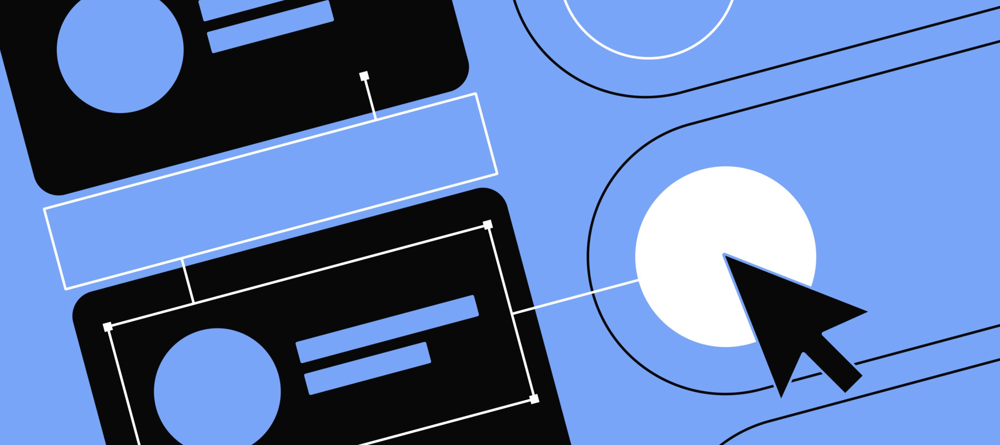

Hello, I'm
Neeraj Full-Stack Developer
A developer passionate about building clean, user-focused web applications. Currently based in Belgium, crafting digital experiences with modern technologies.
Scroll
01
A bit about me
I'm a graduated programmer from Thomas More Antwerpen with a focus on full-stack development. My journey in tech started with curiosity and evolved into a genuine passion for creating meaningful digital solutions.
I believe in writing code that's not just functional, but maintainable and elegant. When I'm not coding, you'll find me playing badminton or watching series.
JavaScript
Java
Spring Boot
Angular
C# .NET
HTML/CSS
SQL
More About Me →

Based in Belgium
02
Selected projects
01
→
02
→
03
→
All Projects →